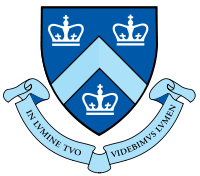
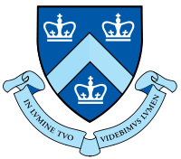

ACM International Collegiate Programming Contest (ICPC) is one of the largest and most prestigious collegiate programming contests in the world. Students compete in teams of 3 to solve a series of problems of a mathematical/algorithmic nature. ACM/ICPC is a multitier competition. Universities compete in regional contests. Then winners of regional contests advance to the world finals. From each region, at least one team goes to the world finals.
Columbia University falls into the Greater New York region. Although the smallest region in North America, it is highly competitive. Each year, more than 50 teams attend the Greater New York regional contest, including teams from Columbia, Princeton, Cornell, and Yale.